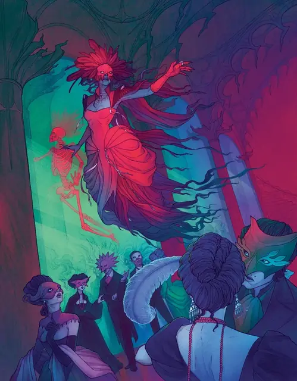

Саидра д’Онэр
Saidra d’Honaire
Средняя Нежить, Нейтральная Злая, именной НИП

Класс Защиты 13 Инициатива +11 (21)
Хиты 90 (12к8 + 36)
Скорость 5 футов, Полёта 60 футов (парит)
| мод | спас | ||
|---|---|---|---|
| СИЛ | 6 | −2 | −2 |
| ЛОВ | 17 | +3 | +7 |
| ТЕЛ | 16 | +3 | +3 |
| мод | спас | ||
|---|---|---|---|
| ИНТ | 12 | +1 | +1 |
| МДР | 14 | +2 | +6 |
| ХАР | 17 | +3 | +3 |
Сопротивление урону Дробящий, Колющий, Рубящий, Кислота, Огонь, Холод
Иммунитеты Некротический, Яд; Бессознательный, Истощение, Окаменевший, Опрокинутый, Опутанный, Отравленный, Очарованный, Парализованный, Схваченный
Чувства Тёмное зрение 60 футов, пассивное Восприятие 16
Языки Общий
Опасность 9 (5 000 опыта или 5 900 опыта в Домене; БВ +4)
Особенности
Восстановление Тёмной владычицы. Спустя 1к10 недель после смерти Саидра возрождается с полными Хитами где-то в Дементьё.
Легендарное сопротивление (3/день, или 4/день в Домене). Если Саидра проваливает спасбросок, она вместо этого может в нём преуспеть.
Чутьё лжи. Саидра сразу понимает, слышит ли она ложь.
Бестелесное перемещение. Саидра может перемещаться через других существ и объекты, как если бы они были Труднопроходимой местностью. Она получает 5 (1к10) Силового урона, если завершает свой ход внутри объекта.
Чувствительность к солнечному свету. Когда Саидра находится на солнечном свету, она совершает с Помехой все проверки характеристик и броски атаки.
Действия
Мультиатака. Саидра совершает три атаки Некротическим выбросом. Она может заменить одну из этих атак использованием Сотворения заклинаний.
Некротический выброс. Бросок рукопашной или дальнобойной атаки: +7, досягаемость 5 фт. или дальность 30 фт. Попадание: 14 (2к10+3) Некротического урона.
Вытягивание жизни. Спасбросок Телосложения: Сл 15, одно видимое Саидрой существо в пределах 30 футов. Провал: 28 (8к6) Некротического урона, и максимум Хитов цели снижается на число, равное полученному Некротическому урону. Успех: Только половина урона.
Правда или смерть (1/день). Саидра просит видимое ею существо в пределах 60 футов назвать себя и сотворяет Дезинтеграцию, выбирая целью это существо, не нуждаясь в Материальных компонентах (заклинательная характеристика — Харизма, Сл спасброска заклинаний 15; с Помехой, если существо солгало).
Сотворение заклинаний. Саидра д’Онэр сотворяет одно из следующих заклинаний, не нуждаясь в Материальных компонентах (заклинательная характеристика — Харизма, Сл спасброска заклинаний 15):
Неограниченно: Очарование личности, Ужас
Бонусные действия
Перевоплощение. Саидра либо перевоплощается в Красную Смерть, либо возвращается в истинную форму герцогини. Её параметры не меняются в зависимости от формы. Любое снаряжение, которое она носит или несёт, не трансформируется.
Легендарные действия
У этого существа есть 3 использования Легендарных действий (или 4 использования в Домене); оно может немедленно после окончания хода другого существа потратить одно использование, чтобы совершить одно из следующих действий. Существо восполняет все потраченные использования в начале каждого своего хода.
Хлёсткий выпад. Саидра совершает одну атаку Некротическим всплеском.
Вуаль мрака. Саидра наделяет себя состоянием Невидимый до начала своего следующего хода и летит на расстояние вплоть до половины её Скорости полёта. Состояние оканчивается преждевременно, если Саидра наносит урон. Саидра не может совершить это действие снова до начала своего следующего хода.
Бонус мастерства +4
Саидра д’Онэр
Тёмная владычица царства иллюзий
Герцогиня Саидра д’Онэр знает, что её жизнь не принадлежит ей — и, более того, что она вообще не жива, — однако предпочитает не замечать этого ради блеска пустых торжеств и жалкой пародии на идеальную жизнь. Герцогиня терроризирует Дементьё, принуждая всё королевство подчиняться её прихотям. Тех, кто обнажает изъяны её фантазии или напоминает об отчаянии прошлой жизни, она убивает своей иссушающей жизнь силой.
Всякому очевидно, что герцогиня д’Онэр не принадлежит к числу живых. Тем не менее слуги и льстецы наперебой восхваляют её осанку, красоту и коллекцию роскошных маскарадных нарядов. Когда Саидра не устраивает декадентских приёмов, она снимает маску и выскальзывает в ночь. По улицам и переулкам Порт-а-Люсина Тёмная владычица рыщет в обличье Красной Смерти — кровожадного духа, что охотится на лжецов, бездомных, попрошаек и всех, кто напоминает ей о собственном убогом происхождении.
Саидра властна и высокомерна, хоть и недалека. Она страшится, что её разоблачат как самозванку, и проецирует этот страх на других, яростно обвиняя их во лжи при малейших признаках вульгарности. Однако из загадочных писем и слухов Саидра узнаёт, что её собственная семья, низкородная и злобная, обитает где-то за пределами её города. Их свидетельства могут обличить весь её обман.
История Саидры
Несмотря на нищенское происхождение, Саидра д’Онэр росла высокомерной задирой, а отец убеждал её, будто втайне она королевских кровей. Когда отец женился второй раз, Саидра пришлось терпеть унижения и насмешки от бессердечной мачехи и сводных сестёр.
В ночь, когда отец признался, что их родство со знатью весьма отдалённое, Саидра бежала прочь. У могилы матери её брань и проклятия подслушала таинственная незнакомка. Гостья, представшая старушкой, предложила исполнить любое желание. Услышав, чего жаждет Саидра, незнакомка злобно расхохоталась и облачила девушку в рубины и алое платье. Ослепительная, Саидра отправилась на бал-маскарад в честь коронации нового герцога.
На маскараде Саидра очаровала герцога и весь двор. Но когда колокола пробили полночь, самоцветы на платье испарились, выпустив волшебный яд. Злая магия убила всех, кто был на балу; бойня исполнила кровожадное желание Саидры и оставила её в шаге от трона. Когда Саидра обходила дворец, полный умирающих, клубы расползающегося яда поднялись загадочным туманом.
Когда туман рассеялся, Саидра оказалась в роскошном поместье в Порт-а-Люсине. Слуги признали в ней свою герцогиню, но смертельный яд растворил тело Саидры, обратив его в мертвенный пар. Никто словно бы не замечал этого, и Саидра приняла фантазию, будто все её тщеславные мечты сбылись.
Домен Саидры
Дементьё, домен Саидры, изменяется из-за её присутствия, что создаёт следующие эффекты:
• Закрытие границ. Когда Саидра находится в домене, она способна по желанию закрывать или открывать границы Дементьё. Когда границы закрыты, в Туманах вокруг Дементьё возникает сельская местность под названием Шатофо. Существа в Туманах блуждают в лабиринте живых изгородей и туманных полей и вновь появляются на окраинах Порт-а-Люсина спустя 2к6 часов.
• Талантливые актёры. Гуманоиды прибавляют 1к8 к проверкам Харизмы (Выступление или Обман), когда носят маску.
• Приглашение. На рассвете Саидра может выбрать существо, чьё имя она знает или которое видела прежде. Перед этим существом появляется простая маска и приглашение на следующий Великий Маскарад. Они возникают на незаметном, но очевидном месте, например на прикроватном столике или среди вещей.
Если Саидра умирает, все эти эффекты мгновенно исчезают. Они возникают снова, если Саидра возрождается (см. Восстановление Тёмной владычицы).